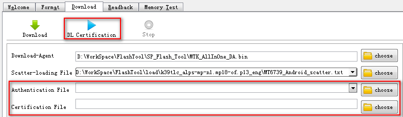
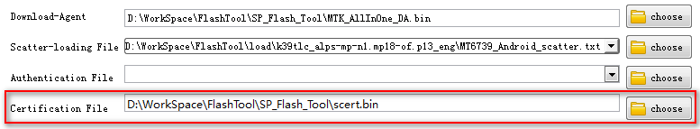
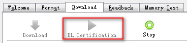

Security settings filed could be found in download page.

�� Certification Download Steps
1. Select SCERT File
Please make sure correct SCERT file has been assigned.

2. Start certification download
Press ��DL Certification�� button to start downloading image.

3. Trigger target to enter bootrom download mode
Trigger target to enter BootRom Download mode and the download procedure will begin.
How to enter BootRom Download Mode: pressing DL Key when plug in battery or cable.
NOTE: Please Make Sure the operation is under BootRom Download Mode, or it does not work.
4. Stop certification download
Note that to interrupt the download process at any time, press the STOP button or F10.